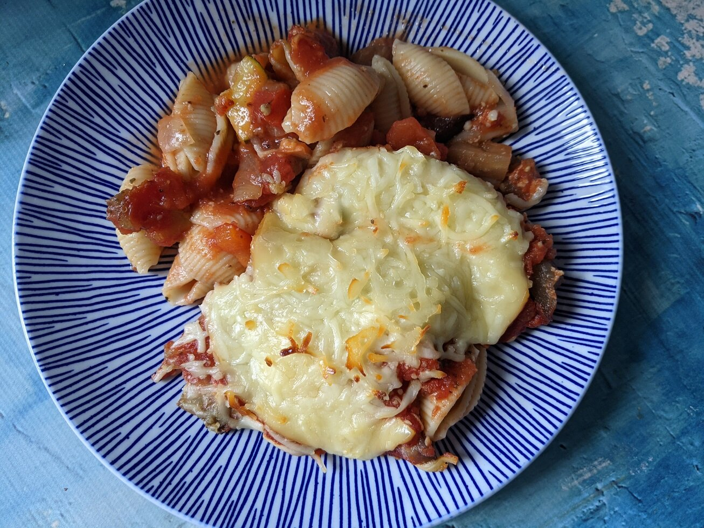

Vegetarian Baked Ziti

Description
Vegetarian Baked Ziti is staple for vegetarians. For meat-eaters, it's good to change things up.
This dish is an excellent meatless option for your family with juicy eggplant and zucchini.
Substitue lentil pasta for more protein.
Cooking Information
- Prep: 30 minutes
- Cook: 55 minutes
- Total: 1 hour 25 minutes
- Servings: 12
Ingredients
- Cooking spray
- 2 tablespoons olive oil
- 2 cups cubed eggplant
- 2 cups cubed zucchini
- 2 large tomatoes, chopped
- 1 medium red bell pepper, cubed
- 1 medium onion, chopped
- 3 cloves garlic, minced, or more to taste
- 2 teaspoons Italian seasoning
- 1 teaspoon of salt
- 1 (16 ounce) package ziti pasta
- 1 (32 ounce) jar spaghetti sauce
- 1 (15 ounce) can Italian-style diced tomatoes
- 1/2 cup non-diary Parmesan cheese substitute
- 1 (16 ounce) package sliced fresh mozzarella cheese
Directions
- Preheat oven to 375 degrees F (190 degrees C).
- Spray a 3-quart baking dish with cooking spray.
- Heat oil in a large saute pan over medium heat.
- Add eggplant, zucchini, tomatoes, bell peppers, onion and garlic.
- Stir occasionally until vegetables are tender, about 10 minutes.
- Sprinkle with Italian Seasoning and salt. Stir to combine.
- Meanwhile, bring a large pot of lightly salted water to a boil.
- Add ziti and cook, stirring occasionally, until tender yet firm to the bite, about 11 minutes.
- Drain and rinse in cold water.
- Mix spaghetti sauce and diced tomatoes together in a medium bowel.
- Spread 1/3 of the sauce mixture in teh bottom of the prepared casserole.
- Layer ingredients as follows: 1/2 ziti,
- 1/2 vegetable mixture, 1/2 Parmesan, 1/2 mozzarella slices,
- 1/2 of the remaining sauce, all of the remaining ziti, all of the vegetables
- All the Parmesan and all of the sauce. Set aside the mozzarella slices.
- Cover loosely and bake in teh preheated oven until bubbly, 25 to 30 minutes.
- Remove from the oven, uncover and top with remaining mozzarella slices.
- Return to the oven and bake, uncovered, until cheese is melted and slightly browned, 10 to 15 minutes longer.
- Serve with a fresh garden salad and lite Italian dressing.